Schifffahrtszeichen
Verbote
Die hier aufgeführten Zeichen entsprechen denen, der Anlage B der Bodensee-Schifffahrtsordnung
Durchfahrt der gesperrten Wasserfläche für Fahrzeuge aller Art verboten
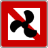
Fahrverbot für Fahrzeuge mit Maschinenantrieb
Fahrverbot für Fahrzeuge mit Maschinenantrieb
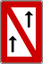
Überholverbot
Überholverbot
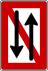
Begegnungs- und Überholverbot
Begegnungs- und Überholverbot
Liegeverbot
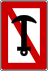
Ankerverbot
Ankerverbot
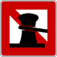
Festmacheverbot
Festmacheverbot
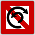
Wendeverbot
Wendeverbot
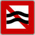
Verbot, schädlichen Wellenschlag oder Sog zu erzeugen
Verbot, schädlichen Wellenschlag oder Sog zu erzeugen
Verbot, außerhalb der angezeigten Begrenzung zu fahren
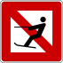
Verbot des Wasserskifahrens
Verbot des Wasserskifahrens
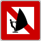
Verbot des Segelsurfbrettfahrens
Verbot des Segelsurfbrettfahrens
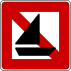
Verbot des Fahrens mit Segelfahrzeugen
Verbot des Fahrens mit Segelfahrzeugen
Gebote
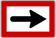
Gebot, die durch den Pfeil angezeigte Richtung einzuschlagen
Gebot, die durch den Pfeil angezeigte Richtung einzuschlagen
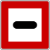
Gebot, unter bestimmten Umständen anzuhalten
Gebot, unter bestimmten Umständen anzuhalten
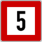
Geschwindigkeitsbegrenzung (auf 5 km/h)
Geschwindigkeitsbegrenzung (auf 5 km/h)
Gebot, ein Schallzeichen zu geben
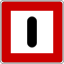
Gebot, besondere Vorsicht walten zu lassen
Gebot, besondere Vorsicht walten zu lassen
Gebote
Beschränkte Durchfahrtshöhe
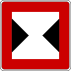
Beschränkte Durchfahrtsbreite
Beschränkte Durchfahrtsbreite
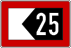
Das Fahrwasser ist eingeengt; die Zahl gibt den Abstand an, mit dem sich Fahrzeuge vom Schild entfernt halten sollen.
Das Fahrwasser ist eingeengt; die Zahl gibt den Abstand an, mit dem sich Fahrzeuge vom Schild entfernt halten sollen.
Einschränkungen
Empfehlung, sich auf der mit „grün“ bezeichneten Fahrwasserseite zu halten
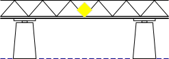
Empfohlene Durchfahrtsöffnung bei Brücken für Verkehr in beiden Richtungen
Empfohlene Durchfahrtsöffnung bei Brücken für Verkehr in beiden Richtungen
Hinweiszeichen
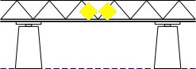
Empfohlene Durchfahrtsöffnung bei Brücken für Verkehr nur in der Richtung in der die Zeichen sichtbar sind
Empfohlene Durchfahrtsöffnung bei Brücken für Verkehr nur in der Richtung in der die Zeichen sichtbar sind
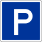
Erlaubnis zum Stilliegen
Erlaubnis zum Stilliegen
Erlaubnis zum Ankern
Ende eines Verbots oder Gebots
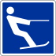
Erlaubnis zum Wasserskifahren
Erlaubnis zum Wasserskifahren
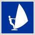
Erlaubnis zum Segelsurfbrettfahren
Erlaubnis zum Segelsurfbrettfahren
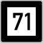
Kennzeichnung der 2 m-Wasserlinie. Bei 2,5 m am Konstanzer Pegel ist seewärts der markierten Stelle eine Mindestwassertiefe von 2 m. Die Zahl auf der Tafel entspricht der in den verschiedenen Bodensee-Schifffahrtskarten eingetragenen Ordnungsnummer.
Kennzeichnung der 2 m-Wasserlinie. Bei 2,5 m am Konstanzer Pegel ist seewärts der markierten Stelle eine Mindestwassertiefe von 2 m. Die Zahl auf der Tafel entspricht der in den verschiedenen Bodensee-Schifffahrtskarten eingetragenen Ordnungsnummer.
Taucherflagge (50 m Abstand)
Untiefen und Schifffahrtshindernisse